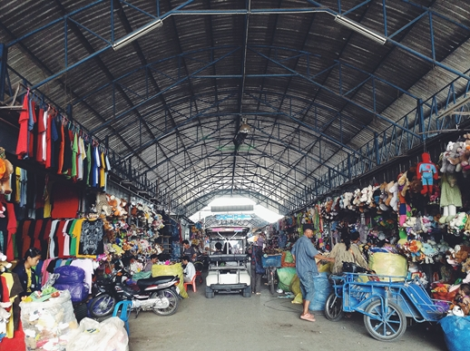
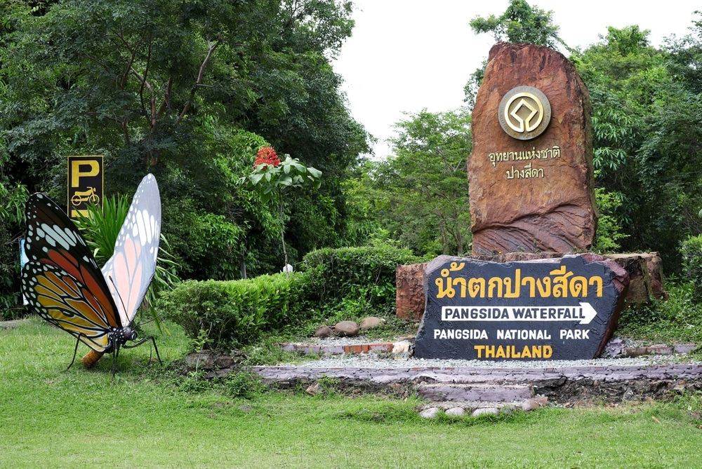
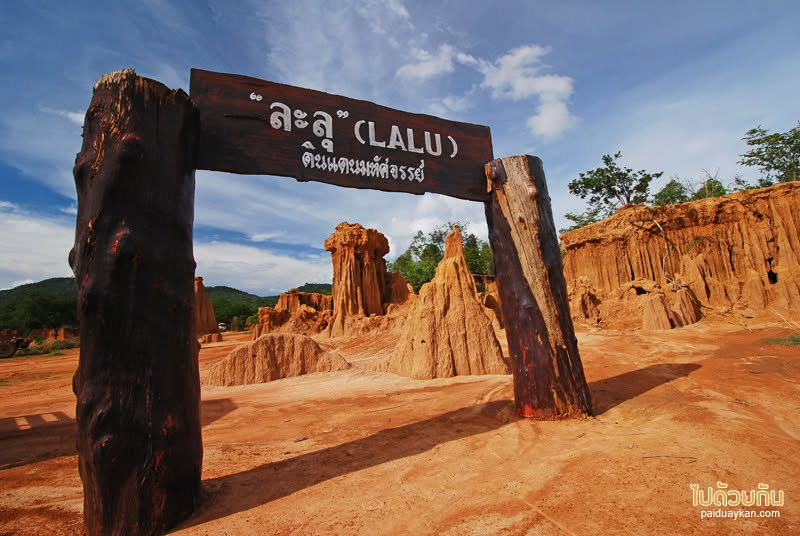
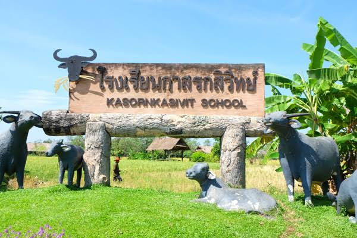
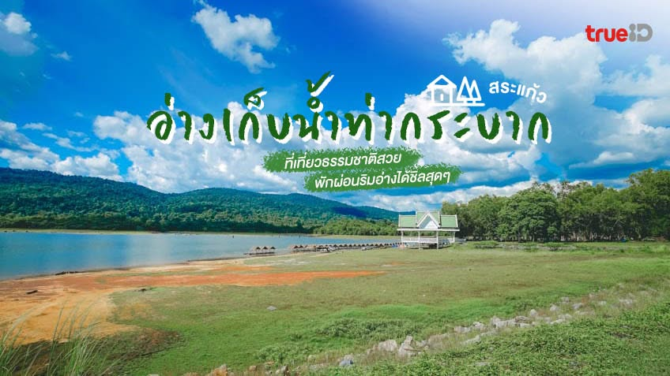

ปราสาทสด๊กก๊อกธม
โบราณสถานขอมที่สำคัญ และเป็นหนึ่งในสถานที่ทางประวัติศาสตร์ ของจังหวัดสระแก้ว
จังหวัดสระแก้วในมุมมองที่เรียบง่ายและทันสมัย
ข้อมูลเบื้องต้นของจังหวัด
จังหวัดสระแก้วเป็นจังหวัดทางภาคตะวันออกของประเทศไทย มีพื้นที่ติดกับประเทศกัมพูชา และมีสถานที่สำคัญทั้งด้านประวัติศาสตร์ การท่องเที่ยว และการค้าชายแดน
เว็บไซต์นี้จัดทำขึ้นเพื่อเป็นส่วนหนึ่งของโครงงาน IS โดยนำเสนอข้อมูลเกี่ยวกับสถานที่ท่องเที่ยว และสิ่งที่น่าสนใจของจังหวัดสระแก้ว
สถานที่ที่น่าสนใจในจังหวัดสระแก้ว
โบราณสถานขอมที่สำคัญ และเป็นหนึ่งในสถานที่ทางประวัติศาสตร์ ของจังหวัดสระแก้ว

ตลาดการค้าชายแดนที่มีสินค้าหลากหลาย และเป็นสถานที่ที่มีชื่อเสียง ของจังหวัดสระแก้ว

แหล่งท่องเที่ยวทางธรรมชาติ และพื้นที่ที่มีความหลากหลายทางชีวภาพ

แหล่งท่องเที่ยวทางธรรมชาติที่เกิดจาก การกัดเซาะของน้ำฝนและลม จนเกิดเป็นเสาดินและรูปร่างแปลกตา

แหล่งเรียนรู้ด้านการเกษตรและวิถีชีวิต ที่เกี่ยวข้องกับการฝึกกระบือ และภูมิปัญญาการทำนา

แหล่งท่องเที่ยวธรรมชาติที่มีผืนน้ำขนาดใหญ่ ท่ามกลางภูเขาและป่าไม้ เหมาะสำหรับพักผ่อนและชมวิว
รวมของน่าสนใจและร้านอาหารที่น่าแวะในจังหวัดสระแก้ว
รวมร้านอาหารที่น่าสนใจในจังหวัดสระแก้ว สำหรับแวะรับประทานอาหารระหว่างการเดินทาง
ดูร้านอาหารแนะนำคาเฟ่และร้านกาแฟบรรยากาศดี เหมาะสำหรับพักผ่อน ถ่ายรูป และนั่งชิล
ดูคาเฟ่พบกับผลไม้และสินค้าเกษตรจากพื้นที่ รวมถึงสินค้าที่ผลิตโดยชุมชนในจังหวัดสระแก้ว
ดูสินค้าแหล่งรวมสินค้าหลากหลาย ทั้งของกิน ของใช้ และสินค้าจากการค้าชายแดน
ดูสินค้า